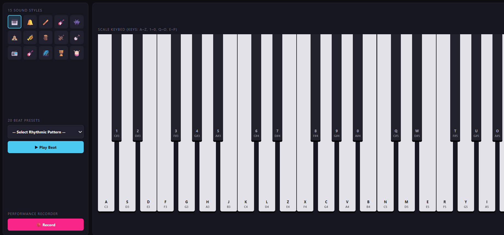

Project 1: Web-Based Audio Synthesizer App

This project helped me understand how client-side web technologies and Web Audio APIs structure interactive multimedia applications.
What I Learned
- Creating interactive user interfaces using structured HTML
- Mapping keyboard inputs to synth logic and sound generators
- Managing media assets and loop beat selectors efficiently